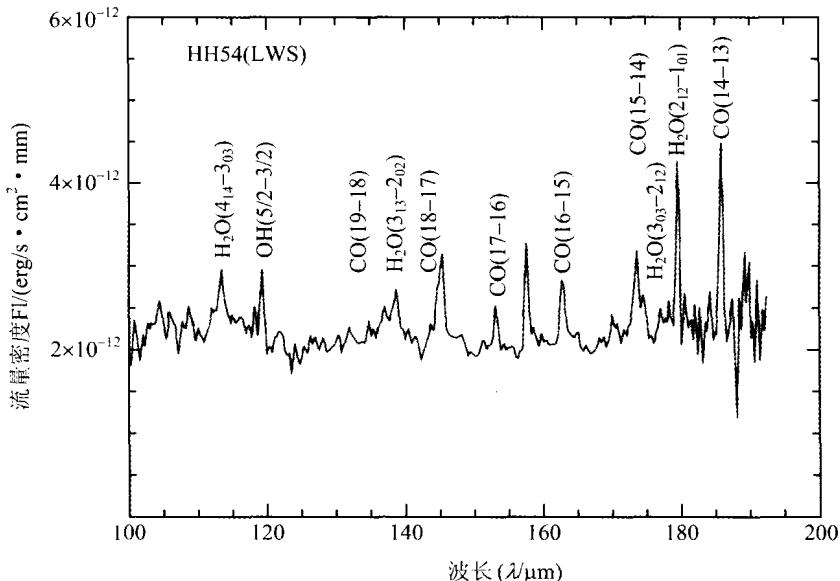
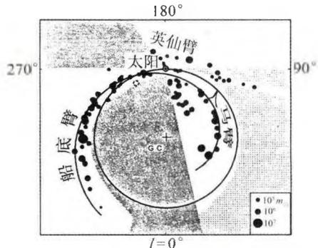
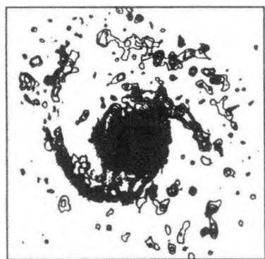
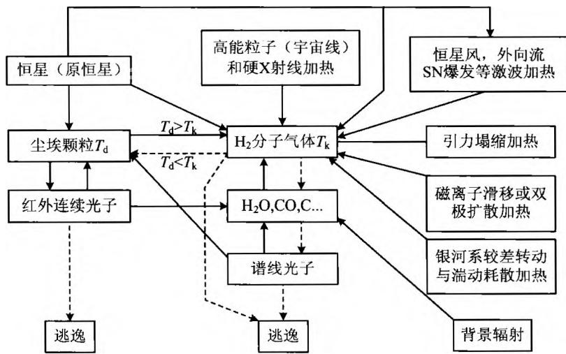
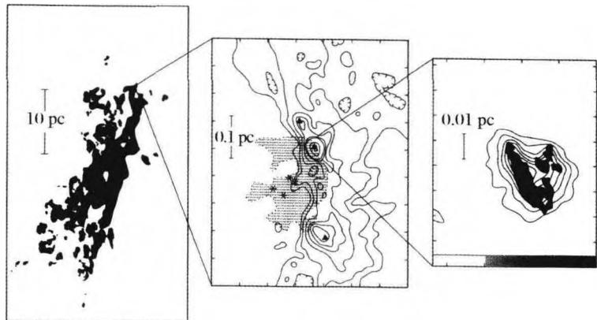
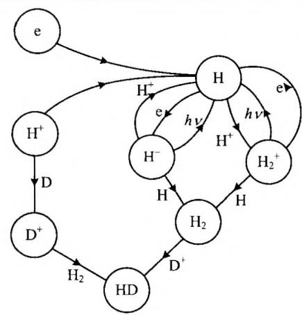
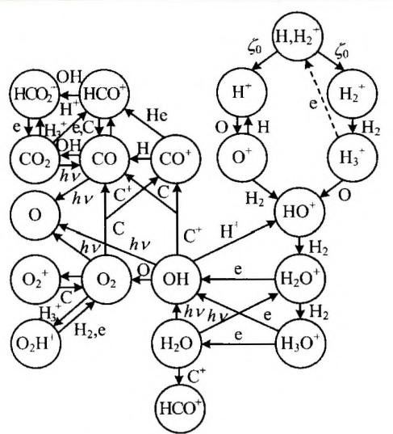
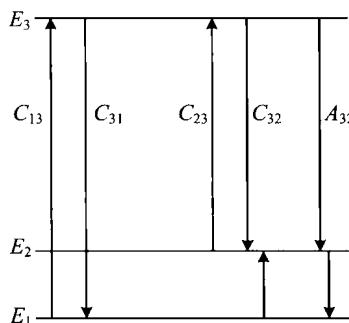

星际分子是20世纪60年代天文学的四大发现之一，并由此而诞生了一个新的研究领域——分子天体物理学（包括分子天体化学）。事实上，早在20世纪30年代，人们就已经发现了星际分子CH的紫外吸收线，到1940年前后共有CH， \mathrm{CH^{+}} 和CN三种星际分子得到确认。但是，从那以后20多年的时间里，星际分子的研究并没有得到人们的重视，因为人们普遍认为，星际空间极低的温度和密度，不可能产生足够多的分子。即使少量分子可以形成，恒星发出的紫外辐射又会使它们很快电离，因而这些稀少的星际分子并不具有天体物理意义。
自二战结束后，微波和雷达技术被广泛用于天文观测，大大推动了射电天文学的发展。1951年发现了射电21 cm的辐射后，就有人开始寻找星际OH，因为氢是宇宙中最丰富的元素，氧的丰度也不算低，它们组合成OH的机会比较大。经过近10年的努力，美国天文学家巴瑞特(A. Barrett)和温雷伯(S. Weinreb)等研制成功了一种新型自相关数字式谱线接收机，他们把它装在一个84英尺的抛物面天线上，于1963年10月指向著名的超新星遗迹仙后座A，结果发现了OH基态两条主线(1 665 MHz 和1 667 MHz)的微波吸收谱线。这项发现被誉为20世纪60年代天文学的四大发现之一。1965年，威沃尔(H. Weaver)等首次发现了OH分子的受激发射，即“脉泽(MASER)”发射。1968年，汤斯(C. Townes)等在人马座A探测到氨 NH_{3} 的谱线(波长1.3 cm)，1969年又在人马座B2和猎户座A探测到水分子 H_{2}O 的强受激发射谱线(波长1.35 cm)。紧接着，甲醛分子 H_{2}CO 的4 830 MHz吸收线也被斯奈德(L. Snyder)等人观测到了，这是在宇宙空间发现的第一种有机分子。1970年，在2.6 mm的波长上发现了宇宙中丰度仅次于 H_{2} 的CO分子。同年，一个载有小型望远镜和紫外光谱仪的火箭升空，发现了期盼已久的氢分子 \mathrm{H}_{2} 。这一系列重要发现给人们带来了极大的鼓舞，并最终使人们确信，即使在星际空间这样严酷的自然条件下，星际气体也完全有可能形成足够多的复杂分子，而且形成的分子可以有效抵御各种不利的外部因素（例如紫外辐射），而长期存活下来。
20世纪70年代以来，随着各种波段的空间望远镜的不断发射上天，特别是近十几年来哈勃空间望远镜、红外空间天文台(ISO)和远紫外光谱探测卫星(FUSE)的投入使用，星际分子的观测和研究获得了日新月异的进展。至2005年7月，已经探测到的星际分子达125种(包括分子的离子和基)，其中大多数是含有C、H、O元素的分子(图5.5)，从双原子分子例如 \mathrm{H}_{2} 和CO，到三原子分子例如 \mathrm{H}_{2}\mathrm{O} 和 \mathrm{H}_3^+ ，一直到复杂的有机大分子，例如 \mathrm{HC}_{11}\mathrm{N} 、 \mathrm{CH}_2\mathrm{OHCHO} （糖分子）和 \mathrm{HOCH_2CH_2OH} （防冻剂分子）。除了这些分子以外，还观测到不少与它们相应的同位素分子。近年来还发现和证认了一些天文固相分子——星际冰。每种分子往往不止观测到一条谱线，而且不止一个源。这些分子在宇宙中分布极其广泛，而且与各种各样的天体成协，反映出它们生存环境的多样性。在已知的天文分子源中，人马座A和人马座B2是最著名的分子源，在那里可以找到目前已经发现的大部分星际分子。

图5.5 原恒星HH54的星际分子的谱线星际分子广泛存在于各种天体环境中，例如星际云、恒星形成区、电离星云、恒星包层、星系前物质、类星体吸收线区、年轻的超新星遗迹以及河外星系中的星际物质，星系中心甚至某些活动星系核等。可以说，从宇宙第一代天体的形成，直到恒星演化晚期的遗迹，都能找到分子的踪迹。因此对星际分子的研究，可以给我们提供大量有关多种天体环境的物理信息（如温度、密度、质量、元素丰度和运动速度）。同时，分子的电子、振动、转动能级之间的跃迁，可以产生从厘米波、毫米波、亚毫米波到红外、远红外以至远紫外波段，范围广阔、且信息极为丰富的谱线（其中特别是射电和红外波段，因其波长较长，故非常适合于观测冷的、对可见光不透明的星云）。这样，我们对天体的研究就有了范围更大的窗口，而且从传统的原子过程和原子核过程扩展到分子过程。观测表明，分子谱线示踪的星际气体的参数范围远远超过了原子谱线，因此带来的信息十分丰富。其中使用最广泛的是CO分子的毫米波谱线，因为CO分子的丰度仅次于 \mathbf{H}_2 ，比其他分子的丰度高出许多，而且容易激发和观测，可以用来示踪形成恒星的原初气体，并估计它们的质量和运动速度。除了CO外，硫化碳(CS)和甲醛 (\mathrm{H}_2\mathrm{CO}) 也是常用的分子。
以银河系为例(图 5.6a)，现在已经知道，银河系中大约 50% 的星际物质是以分子形式(主要成分是 H_{2} )存在的。在离银心 4～8 kpc 处有一个分子环带，其中分子物质占星际物质总量的约 90%。观测发现，氢分子 H_{2} 在银心附近有很强的分布，80%～90% 的 H_{2} 集中在太阳圈内，特别是在上述分子环区域内。在银河系中分子的分布与中性氢（H I）的分布相差很远，但与电离氢（H II）的分布比较接近，H II区明显地和较热的大分子云或巨分子云成协。较热的分子云（T>10 K）主要分布在旋臂上，而较冷的分子云（T<10 K）则有相当均匀的盘状分布。CO 分子的观测表明，银河系内恒星的形成是与分子云密不可分的。河外星系 M51 也有类似的情况，CO 分子云的观测显示，分子云散布在旋臂和臂间区（图 5.6b），两处的密度比约为 3～5：1，较热的分子云存在于旋臂上。现在认为，巨分子云是较小的云通过密度波（见下一章）的轨道聚集作用而形成的。

未分析部分 观测不完全部分
(b) 旋涡星系 M51 中 CO分子云的分布 图5.6 分子云在星系中的分布星际分子对许多天体物理过程有着重要的意义。分子常常控制着天体的温度和电离结构，它们的存在可以起到加强或抑制动力学不稳定性的作用，因而可能决定性地影响它们参与形成的天体的演化。例如在原始星云凝聚为原恒星的过程中，分子就起到至关重要的作用。观测表明，分子云常常和年轻的恒星紧密联系在一起，说明分子云是恒星形成的主要场所。这其中的一个重要原因是，星云气体的凝聚过程中，必须把一部分能量损失掉，使总能量减少（见3.1节）。这一过程的实现主要是通过各种形式的辐射。其中分子辐射的作用十分重要，这是因为分子能级（主要是振-转能级）之间的差异很小，跃迁时产生长波（红外）辐射，它们比较容易穿透稠密的云层而散发掉，从而促使星云很快冷却并进一步坍缩。图5.7画出了分子云中的能量转移过程图，其中包括各种主要的加热机制和冷却机制。

图 5.7 分子云中的各种能量转移过程图, 其中 实线箭头表示加热过程,虚线箭头表示冷却过程当然，分子云与恒星形成的关系是很复杂的，其中有很多需要深入探讨的问题，例如：分子云是如何形成与演化的？分子云与原子云的关系？什么是支撑分子云的动力学因素？恒星在分子云中的何处形成？星际磁场在分子云的支撑、碎裂和坍缩过程中的作用？等等。尽管许多问题至今还没有完全解决，但人们对分子云的认识已经深入了许多。例如人们已经知道，大质量的O、B型星主要是在巨分子云中形成的，而低质量星更倾向于与小分子云成协。图5.8显示猎户座A巨分子云的结构，它明显包含团块、稠密核、纤维、空洞等多种结构形态。目前，恒星主序前演化的几个关键阶段，如分子云开始坍缩、稠密核的形成、被星云吸积盘包围的原恒星的出现等，相应的分子过程和谱线发射均已发现。

图 5.8 猎户座 A 巨分子云, 显示出团块、 稠密核、纤维、空洞等多种结构形态在恒星演化的晚期阶段(例如红巨星的渐进巨星阶段)，显著的质量流失形成了一个由分子和尘埃组成的光学厚的星周包层，它是物质由恒星返回星际空间的结果。星周包层有效地屏蔽了星际紫外辐射，成为丰富的分子源，它们提供了有关包层、中心星的质量抛射及其内部核燃烧过程的大量信息。因此可以说，分子的研究给我们提供了恒星从诞生到死亡，星际物质从星云到恒星、再返回星际空间的大量信息。
分子天文学发展的同时也促进了天体化学的发展。如果说前者关注的是宇宙中有哪些分子，则后者关注的是这些宇宙分子是如何产生的，并通过分子丰度的演化来了解星云以及相关天体的演化。我们已经知道，星际分子存在于各种极端条件的天体环境中，这意味着它们的化学也是高度复杂的，其中包括：发生在尘埃颗粒表面的化学；有关离子-分子气相反应的化学；恒星演化晚期包层和大气中的化学；激波激发的化学等。最有兴趣的问题之一是，宇宙中的第一个分子如何形成。我们在第7章中将谈到，当宇宙温度下降到 4000\mathrm{K} 左右时，电离的氢复合为中性氢，此时物质与辐射脱耦。宇宙化学应当始于这一时刻，第一个分子应当是氢分子。复合后残余的离子和电子是形成氢分子的催化剂，它们通过两种机制产生氢分子（见图5.9）：
\mathrm{H} + \mathrm{H} ^ {+} \rightarrow \mathrm{H} _ {2} ^ {+} + \gamma , \quad \mathrm{H} _ {2} ^ {+} + \mathrm{H} \rightarrow \mathrm{H} _ {2} + \mathrm{H} ^ {+}\tag{5.18}
\mathrm{H} ^ {+} + \mathrm{e} ^ {-} \rightarrow \mathrm{H} ^ {-} + \gamma . \quad \mathrm{H} ^ {-} + \mathrm{H} \rightarrow \mathrm{H} _ {2} + \mathrm{e} ^ {-}\tag{5.19}
氢分子可以使星云气体很快冷却，故对第一代天体的形成起到决定性的作用。在弥漫云、巨分子云、暗分子核中，离子-分子化学是大多数种类分子形成的最主要机制。近20年来，激波化学的研究有了很大进展，人们发现，激波对分子和分子谱线的形成有重要作用。这是因为，激波对气体的加热将迅速克服化学反应中的活化能势垒，从而产生低温下无法进行的一些吸热反应，例如 \mathrm{C}^{+} + \mathrm{H}_{2}\rightarrow \mathrm{CH}^{+} + \mathrm{H} \mathrm{S}^{+} + \mathrm{H}_{2}\rightarrow \mathrm{SH}^{+} + \mathrm{H} 等反应。在低温下，O不能与 \mathbf{H}_2 反应，而是通过 \mathrm{O}^+ 和 \mathrm{H}_{2} 反应来形成OH和 \mathrm{H}_2\mathrm{O} 的。但在激波产生的高温下，下列反应可以迅速进行：
\mathrm{O} + \mathrm{H} _ {2} \rightarrow \mathrm{OH} + \mathrm{H}, \quad \mathrm{OH} + \mathrm{H} _ {2} \rightarrow \mathrm{H} _ {2} \mathrm{O} + \mathrm{H}\tag{5.20}
这就大大增加了OH和 \mathrm{H}_2\mathrm{O} 的丰度。图5.10显示了弥漫星云中典型含氧分子的
图5.10 弥漫星云中典型含氧分子的生成途径

图5.9 早期宇宙的氢化学模型

生成途径。
自1965年第一次发现星际OH的强发射，1966年被证认为天体脉泽以来，天体分子脉泽的研究得到了迅速的发展。脉泽（MASER，即Microwave Amplification by Stimulated Emission of Radiation)的意思是微波激射放大，它产生的机制是分子受激发射，即由另一个光子的激发，引起分子发射光子。作为最简单的说明，只考虑分子有两个能级，且分子起初处于较高的能级。假如有一个光子的能量正好等于这两个能级之差，并击中了这个分子。这时分子不能吸收光子，因为分子已经处于高能态。但是，由于这个光子的碰撞激励，分子从高能态跌落到低能态，并在这个过程中发射一个光子。这样，在整个受激发射过程中，一个光子进入，两个光子发出。这两个光子有相同的波长，相同的位相，并向同一方向行进。这两个光子一路上继续不断地激励更多的分子发射，从而引起连锁反应，最终辐射不断被放大而产生强大的能量输出。这一受激发射的机制完全类似于激光原理，只不过现在是由分子来完成的，且产生的辐射位于微波波段。显然，要实现受激发射，最重要的条件是要有大量分子事先处于较高的能级，这就需要有一种机制，来实现粒子布居数的反转。单靠两能级系统是不可能实现反转的，这是因为热碰撞跃迁总是向下的几率大于向上的几率，最终使粒子布居趋于下能级。导致脉泽能级布居数反转的机制称为抽运(Pump)机制，其中最简单的是三能级抽运模型。
如图5.11所示，假定有3个能级 E_{1} < E_{2} < E_{3} 的系统，其中 E_{3} 的作用是能源储存器。分子脉泽源起初处于基态能级 E_{1} ，由于分子间的碰撞而跃迁到 E_{3} 。一般情况下，系统是从 E_{3} 直接跃迁回到到 E_{1} ，或通过 E_{2} 并很快回到 E_{1} ，这样就无法实现粒子数反转。但对于一些分子来说，例如对于 \mathrm{OH} 和 \mathrm{H}_2\mathrm{O} 分子，从 E_{3} 到 E_{2} 的辐射衰变几率很高，但接下来从 E_{2} 到 E_{1} 的跃迁几率却非常低，这就使得大量分子聚集在 E_{2} 的能态，其数目甚至超过处于基态 E_{1} 的数目，这就实现了粒子数的反转。此时若有一个频率正好等于

图5.11 三能级抽运模型E_{2}-E_{1} 的外部光子射入，就会产生受激发射，即分子脉泽发射。脉泽的产生需要从基态 E_{1} 到 E_{3} 的能量抽运，这一能量来自于分子之间的碰撞或外部的红外、紫外源或 HⅡ区。
迄今为止，已经观测发现了3000多个天体分子脉泽源，主要是OH, \mathrm{H}_2\mathrm{O} ,SiO和 \mathrm{CH}_3\mathrm{OH} 4种分子产生的，近年来又发现了一些新的脉泽分子，如 \mathrm{H}_2\mathrm{CO},\mathrm{HCN}, \mathrm{NH_3} ,SiS等。这些脉泽源主要分布在银河系的恒星形成区或晚期恒星的包层中，大多具有成团、成块的特征，称为脉泽源斑。单个源斑的最小尺度只有一个天文单位，但源斑的亮度却很大，相应的亮温度高达 10^{9}\sim 10^{15}\mathrm{K} 。许多天体脉泽具有偏振性，绝大多数脉泽源还具有程度不同的光变，有的还出现爆发现象。目前认为，脉泽是大、中质量恒星正在形成的一个标志，也是恒星即将死亡的一种指示。
在河外星系中也观测到 OH 和 H_{2}O 的超强脉泽，例如河外 OH 脉泽已经发现 50 多个，它们通常与活动星系核成协，其中最突出的是 NGC3079，其脉泽光度高达 520L_{\odot} 。这样强的脉泽辐射使人们联想到，有可能用它们示踪宇宙中超大黑洞的存在。